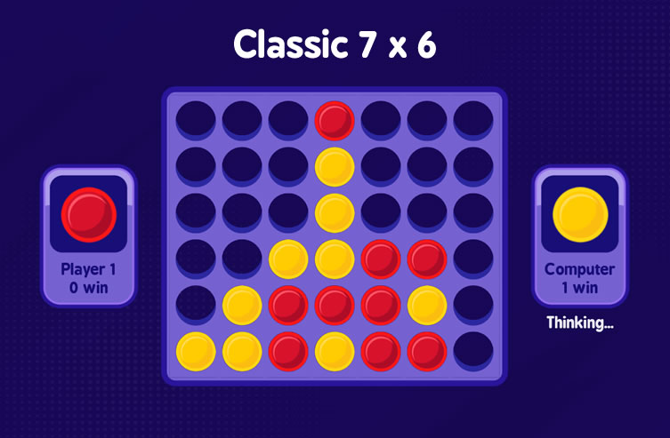
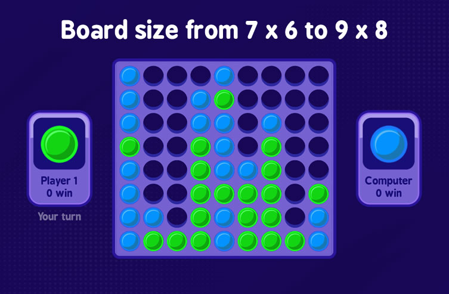
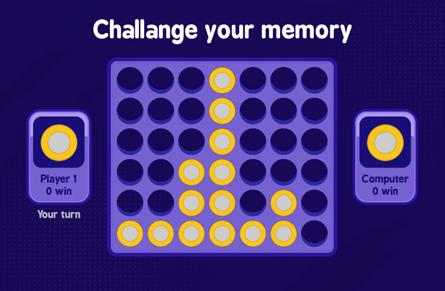

“Connect Four” Documentation by “demonisblack” v1.5
“Connect Four”
Created: 02/27/2022
By: demonisblack
Email: demonisblack@gmail.com
Thank you for purchasing the game. If you have any questions that are beyond the scope of this help file, please feel free to email via profile page contact form here. Thanks so much!
Table of Contents
- Introduction
- Getting Started
- HTML Structure
- CSS Files and Structure
- JavaScript
- Game Functions
- Game Assets
- Compatibility
- Sources and Credits
- Changelog
- Support Policy
A) Introduction - top
Connect Four is a HTML5 game where 2 player game in which the objective is to connect four of coloured disks by dropping them into the holder, play against computer or against a friend. Challenge yourself from a traditional 7 X 6 grid, or custom board size from 7 x 6 to 9 x 8.
The ZIP package contains the game with 1280×768 and 768×1024 resolution that scales proportionally to fit current screen device.
  B) Getting Started - top
To install the game just upload folder 'game' to your server. The game won't run locally with some browser like Chrome due to some security mode.
You need a website that runs PHP to make facebook share button work, and make sure to change Facebook Open Graph meta and Twitter meta in index.html, just replace [GAME_URL] to your game URL.
<!-- for Facebook -->
<meta property="og:image" content="[GAME_URL]/share.jpg" />
<meta property="og:url" content="[GAME_URL]" />
<!-- for Twitter -->
<meta name="twitter:image" content="[GAME_URL]/share.jpg" />
You can easily customize game text and settings in game.js file
//icons array
var iconsArr = [
{o:'assets/icon_o_1.png', x:'assets/icon_x_1.png'},
{o:'assets/icon_o_2.png', x:'assets/icon_x_2.png'},
{o:'assets/icon_o_3.png', x:'assets/icon_x_3.png'},
{o:'assets/icon_o_4.png', x:'assets/icon_x_4.png'},
{o:'assets/icon_o_6.png', x:'assets/icon_x_6.png'},
{o:'assets/icon_5.png', x:'assets/icon_5.png'},
]
//classic settings
var defaultSettings = {
twoPlayer:true,
row:6,
column:7,
connect:4
};
//custom settings
var customSettings = {
enable:true,
twoPlayer:true,
rowMin:6,
rowMax:8,
columnMin:7,
columnMax:9,
connectMin:4,
connectMax:6,
};
//board settings
var boardSettings = {
radius:35,
margin:10,
color:'#7661d1',
winColor:'#321699',
winAlpha:.5,
shadowColor:'#2a27a0',
shadowOffsetX:0,
shadowOffsetY:-10,
borderColor:'#28159b',
borderStroke:10,
borderRadius:20,
borderMargin:10,
timer:120000
};
//game text display
var textDisplay = {
customTitle:'Custom Board',
customSize:'[COLUMN] x [ROW] size',
customWin:'connect [NUMBER]',
vs:'VS',
player1:'Player 1',
player2:'Player 2',
computer:'Computer',
userTurn:'Your turn',
computerTurn:'Computer turn',
gameWin:'[NUMBER] win',
draw:'Draw',
timeUp:'Time\'s Up',
exitTitle:'Exit Game',
exitMessage:'Are you sure you want\nto quit game?',
share:'Share your score:',
resultTitle:'Game Over',
resultDesc:'you won [NUMBER] round',
}
//Social share, [SCORE] will replace with game score
var shareEnable = true; //toggle share
var shareTitle = 'Highscore on Connect Four is [SCORE]pts';//social share score title
var shareMessage = '[SCORE]pts is mine new highscore on Connect Four game! Try it now!'; //social share score message
The sound can be easily disabled to avoid compatibility issues in sound.js file:
var enableMobileSound = true;
C) HTML Structure - top
The page start with the loader wrapper that covering the whole screen in the body. It shows loader progress when calls the function initPreload()
<!-- PERCENT LOADER START-->
<div id="mainLoader"><img src="assets/loader.png" /><br><span>0</span></div>
<!-- PERCENT LOADER END-->
This section is for browser not support page when calls the function checkBrowser(). It shows error message when detect the browser does not support canvas.
<!-- BROWSER NOT SUPPORT START-->
<div id="notSupportHolder">
<div class="notSupport">YOUR BROWSER ISN'T SUPPORTED.<br/>PLEASE UPDATE YOUR BROWSER IN ORDER TO RUN THE GAME</div>
</div>
<!-- BROWSER NOT SUPPORT END-->
Follow by one canvas tag in the body. The game start initiatie by calls the main function of the game initMain().
<!-- CANVAS START-->
<div id="canvasHolder">
<canvas id="gameCanvas" width="1280" height="768"></canvas>
</div>
<!-- CANVAS END-->
D) CSS Files and Structure - top
I'm using two CSS files in this game. The first one is a generic reset file. Many browser interpret the default behavior of html elements differently. By using a general reset CSS file, we can work round this. This file also contains some general styling, such as anchor tag colors, font-sizes, etc. Keep in mind, that these values might be overridden somewhere else in the file.
The second file contains all of the specific stylings for the page.
E) JavaScript - top
This game using Javascript files below.
-
jQuery is a cross-platform JavaScript library designed to simplify the client-side scripting of HTML.
-
Detect Mobile Browser is a open source scripts to detect mobile browsers and phones.
-
CreateJs plugin is a suite of modular libraries and tools which work together to create interactive content on open web technologies via HTML5.
-
TweenMax is an extremely fast, lightweight, and flexible animation tool that serves as the foundation of the GreenSock Animation Platform (GSAP).
-
The game have the following js files
- init.js : check if browser or device support
- loader.js : loader to load all game images
- main.js : initiate game setup and browser resize function
- mobile.js : mobile orientation change
- canvas.js : canvas setup and resize
- sound.js : sound event
- game.js : game play and logics
- plugins.js : additonal useful plugins
- init.js : check if browser or device support
Complete game flow:
- The index.html file start init.js for browser detection
- If browser is supported, init loader.js to start load asserts with loading progress
- For mobile the rotate instruction shows when device is in portrait view, detect by mobile.js
- When all asserts contained in "/assets" folder are loaded, the game start construct canvas.js from main.js thats shows game menu
- If user click classic or custom button in game menu, one or two player button will show
- If user click classic mode, the game will start with game.js
- If user click custom mode, the custom menu will show
- From player screen, user can choose different icons and switch side
- If user connect four of coloured disks (horizontal, vertical, or diagonal), user will score.
- If time is up, game result will shows
- If user click the main button in game result, it will restart the game
F) Game Functions - top
The most important functions used for page.
-
checkBrowser()
This function is runs for browser detection
-
checkMobileEvent()
This function runs for mobile event
The most important functions used for game.
-
initMain()
This function build canvas
-
startGame()
This function start gameplay
-
stopGame()
This function stop gameplay
-
saveGame()
This function save game score
G) Game Assets - top
The game contain 'design' folder which include following:
- connectfour_1280x768.psd - with layer folders below
- Option
- Result
- Gameplay
- Landing
The folder 'assets' in 'game' folder contains all the images of the game that can be replaced. Is better to have the same size of the old ones if you want to reskin the game graphic without coding.
H) Compatibility - top
This game is build for Desktop browsers that support HTML5 canvas. Any mobile/tablet should work in landscape view, but they are not officially supported.
I) Sources and Credits - top
I've used the following font and sound files as listed.
- BPreplay from file George Triantafyllakos
- Chest pieces from file 180118
- Menu Select Sound.wav from file Lost_Dream
- UI_6 Tonal beep.Aliens.Proximity alert(63osc,chrs,cmpr).wav from file newlocknew
- item1.wav from file Vicces1212
- Notification 2.ogg from file melokacool
- successarpeggio.flac from file djm62
- alert1 : (no distortion) from file Tissman
J) Changelog - top
Version 1.5- Fixed fullscreen issue
- Fixed multiplayer issue
- Compatible with Multiplayer add-on
- Fixed scoreboard issue
- Option for two player
- Added new icon
K) Support Policy - top
Check out support policy here.
Wordpress Site
By using Scoreboard for HTML5 Games plugin, you can embed HTML5 game into WordPress post or page.
> Plugin
Help simulate ads on HTML5 Games, you can integrate and display static and takeover ads through different Ads Serving Platform.
> Documentation
Guide you through integrating Facebook Instant Games API in our HTML5 Games.
> Documentation
Once again, thank you so much for purchasing this game, if you have a more general question relating to the games on CodeCanyon, you might consider visiting the item page in the "Support" section.
If you like the game, please take a moment to rate it. Thanks! 
How to rate an item on CodeCanyon?
If you want to rate one of our items on CodeCanyon please do it like this:- Login to CodeCanyon
- Open the menu on the top right, and click onto the link “Downloads” which shows a list of your downloads
- Rate our items using the stars
- That’s it. Thank you very much!
demonisblack